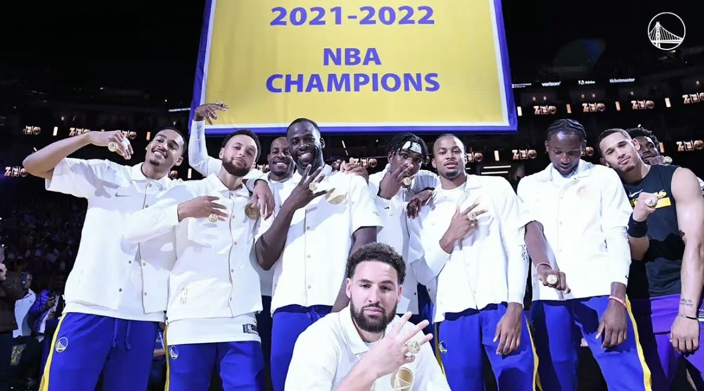

冠军历程
金州勇士队在近年来取得了许多辉煌的成绩，特别是在2010年代以及之后的几个赛季，他们展现了卓越的篮球实力和团队成就。以下是金州勇士队的一些辉煌成绩和重要里程碑：
在这个赛季中，金州勇士队由史蒂芬·库里（Stephen Curry）、克莱·汤普森（Klay Thompson）、德雷蒙德·格林（Draymond Green）等球员组成的阵容，以强大的进攻和出色的团队配合，赢得了他们近年来的第一个NBA总冠军。他们在总决赛中击败了克利夫兰骑士队，库里成为了这个赛季的常规赛MVP（最有价值球员）。
在这个赛季中，金州勇士队创下了NBA常规赛历史最佳的73胜9负的战绩，超过了1995-1996赛季的芝加哥公牛队的72胜10负纪录。尽管他们在总决赛中输给了克利夫兰骑士队，但这个赛季的成绩仍然被认为是篮球史上的一个壮举。
金州勇士队在这个赛季再次夺得NBA总冠军，击败了克利夫兰骑士队，赢得了他们第二个总冠军。他们在季后赛中表现出色，库里、汤普森和格林等球员再次发挥关键作用。
金州勇士队连续第三个赛季进入总决赛，并再次击败克利夫兰骑士队，成功卫冕NBA总冠军。他们在这个赛季中展现了出色的团队协作和技术水平。
勇士于次年再度进入总决赛，但凯文·杜兰特和克莱·汤普森先后受大伤，最终以4比2输给多伦多猛龙（当中主场三战全败），被多伦多猛龙终结了三连霸之旅。
2019-20赛季，勇士主场从甲骨文球馆迁至旧金山的大通中心球馆。该赛季开始仅四场比赛，库里便遭遇左手第二掌骨骨折。经历了连续5年杀入总决赛的神奇旅程后，勇士当赛季以15胜50负的战绩垫底全联盟。
2020-21赛季，克莱·汤普森在训练当中右腿跟腱撕裂，再度赛季报销。勇士以西部第八名进入到附加赛的角逐当中。附加赛首战对阵卫冕冠军湖人被反超；第二场迎战灰熊，勇士加时告负，彻底宣告无缘季后赛。
勇士队在2022年1月迎来了克莱·汤普森的复出。西部决赛对阵东契奇领军的独行侠，勇士前三场战罢即取得大比分3-0领先，最终以大比分4-1淘汰对手，时隔三年重返总决赛。总决赛对阵凯尔特人，勇士一度大比分1-2落后。总决赛G4，凭借库里砍下的43分，勇士2-2扳平大比分。总决赛G5，勇士全队多点开花，拿下天王山之战。总决赛G6，勇士以103-90战胜凯尔特人，大比分4-2领先，成功夺得队史第七个、八年来的第四个NBA总冠军，以7座NBA总冠军超越公牛（6冠）独占历史第三。
总的来说，金州勇士队在过去的几个赛季中取得了惊人的成绩，展示了顶级的篮球水平和团队凝聚力。他们成为了NBA历史上最为成功的球队之一，也为球迷们带来了无数令人难忘的时刻和比赛。